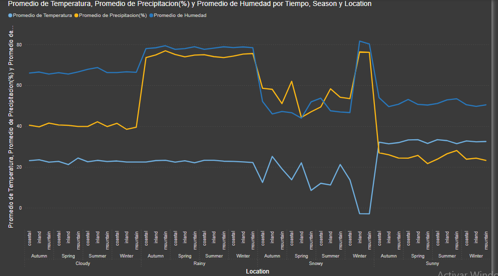
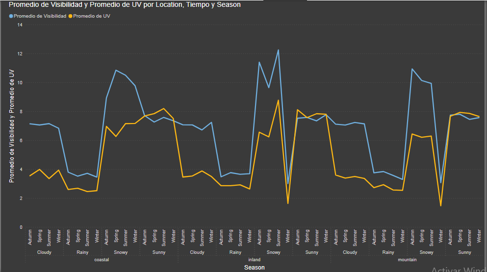

Acerca de los datos
Como casi siempre los datos fueron obtenidos de una fuente pública, específicamente de la pagina web kaggle.com
en los cuales se encuentran relacionadas las variables meteorológicas en diferentes zonas geográficas de Canada, en cada estación del año. Es
importante indicar cuales fueron las variables más relevantes que conformaron este set de datos.
Visualizacion de los datos Históricos
Es importante graficar los datos que se tienen para poder identificar una relacion directa o indirecta. Para realizar esta tarea se hizo uso
de Microsoft Power BI y Microsoft Excel, utilizando tablas de pivote se pudo agrupar las variables por estaciones del año y a su vez por zona
geográfica.
Promediando los valores historicos se obtuvo como resultado los siguientes gráficos.
Gráfico promedio P_H_T
Gráfico promedio UV_V
Siendo así, es posbible entrenar un modelo para predecir la Visibilidad de un día partiendo del dato de la incidencia de los rayos UV, ya que en una carretera en las altas montañas de Canada para un taxista este dato puede hacer la diferencia entre la vida y la muerte.
A continuación es lo que intento demostrar en pocas lineas de código.
Predict
Librerías utilizadas
.py, entrené el modelo en un ventana utilizando Jupyter Notebook y el resultado de los
scores del modelo fue el siguiente. visibiliy_predict.py, se puede estimar cual es la visibilidad para un día normal utilizando como
entrada por teclado el valor de medición de la incidencia de los rayos UV. La siguiente imagen muestra lo sencillo que es utlizar la funcion LinearRegression dentro de la librería de sklearn.
.ipynb que contienen funciones que predicen que tan nublado
estará un dia según los datos de entrada de Temperatura, Precipitaciones, Humedad y Velocidad del viento. Para descargarlos puedes hacer click en
los nombres de los archivos.
cloudy_predict.ipynbvisibilit_predict.ipynbvisibiliy_pred.pyNecesitas instalar las librerías correspondientes